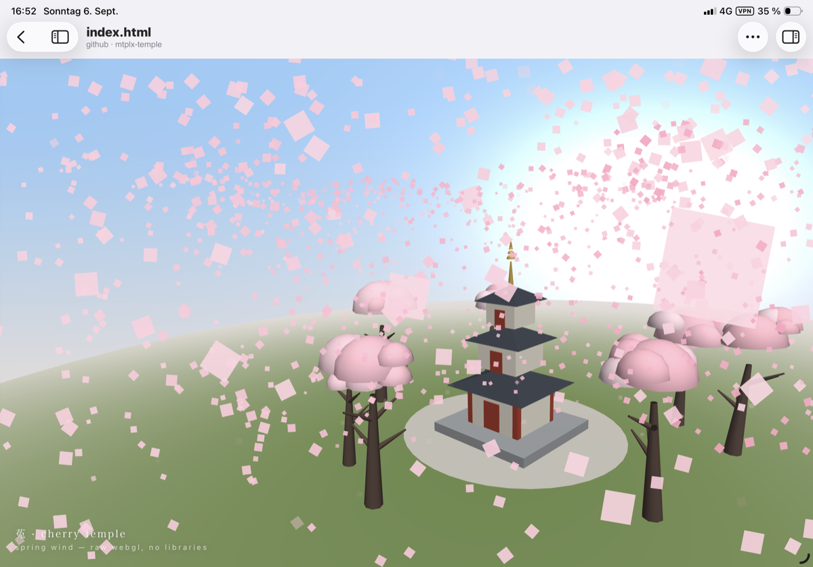

Qwen Revisited
The Local AI saga: 1. Little Gemma vs Big Desk · 2. Three Different OCRs · 3. Friendly Competition · 4. 95% Done, 100% Blue Sky · 5. Lost in Compression · 6. Qwen Revisited
Three weeks ago a model on my laptop designed a Japanese temple and never got to see it. On Sunday I gave it a third try. The temple appeared on my iPad on the first attempt — and by evening the model had looked at a photo of it and pointed at its own mistakes.
Third engine, same spec
Qwen 3.8 had already won my aquarium contest, designed a temple it could not render, and shown me that two "3-bit" copies of one model can behave like strangers. Same 27-billion-parameter model every time — the same brain. What changed between chapters was the software that runs it, the engine, and how the model had been shrunk to fit my laptop.
The shrinking is the whole game. The full model is too big for any laptop. Squeeze every part equally and it turns to gravel. Spare the load-bearing parts and the same space buys you a model that builds reefs.
Then the author of an engine I had written off in July posted new builds. My first try with it had been a dud: slower than what I already had, on an older version of the model. But he wasn't advertising speed. He was advertising what he had chosen not to compress.
I tried again.
If 4 bits match 3 bits, it's a win
My assistant looked for the "optimized for your Apple chip" versions the post had promised, found none, and concluded the post was wrong.
I told it the post was from the author of the repo it was sitting in.
That changed the search. There were builds for older and newer Apple chips, plus a speed test that picks the best setting for your own machine. The download was a 4-bit model with a few sensitive parts kept at 8 bits. Bigger than my 3-bit. That was the point.
I set my bars while it downloaded. A token is a word or a piece of one, and tokens per second is this hobby's speedometer. Matching the old engine's 17 would be a win. Hitting 30 would be amazing. My assistant predicted somewhere around 30 for my machine.
The speed test came back: 47.6 tokens per second. With an asterisk. A speed test is a sprint: short prompt, short answer, no thinking. In real work, with a long think and a whole conversation to re-read, it settles around 30, give or take. Which was still the bar I had called amazing.
A quick aquarium run produced a working reef on the first try, no black fish this time. Fine. The temple was the exam.
Its 15 minutes now
I connected the new engine to OpenCode, my coding tool, opened a fresh session, and repeated the sentence that had beaten this model three weeks earlier:
Build a single page HTML file with the Japanese temple, surrounded by
cherry blossom trees, swinging in the wind as a 3-D scene without using
any libraries, and it must render even in Safari on the iPad
A few minutes in I checked whether it had stalled. It hadn't. It was working out the geometry before committing to a line of code.
Fifteen minutes in I asked again. It had just finished, and it had held 31 tokens per second the whole way. It had been allowed to finish the thought.
And then the file didn't land.
OpenCode threw an error: the model had called the write command but filled in the field that belongs to edit. All four hundred lines of the temple sat under the wrong label. My assistant found the cause in the logs. The connector between the engine and OpenCode had shown the model the command names but not the fields each one needed. It guessed.
Not the model's fault. It had never seen the form. OpenCode sent the complaint back, the model tried again with the right field, and the file landed. It would make the same slip again that evening on a tic-tac-toe game, and recover the same way.
Temple arrived
Nobody in the room could look at it but me. Qwen tried three times to open a preview of its own file; the preview tool wasn't available to it. My assistant tried to render it for a screenshot; its headless browser can't do 3-D. Two AIs had built and checked a temple neither of them could see.
So I opened it on the iPad.

First render, first generation, Safari on the iPad. Same model that had produced only blue three weeks earlier.
In the corner it had signed its own work: cherry temple — spring wind, raw webgl, no libraries. WebGL is the browser's built-in 3-D drawing system, the bare one, and "no libraries" was my rule. It had noted its own handicap on the label.
It wasn't perfect. Several canopies floated a little clear of their trunks. The roof tiers didn't quite meet the walls. And the petals had no sense of distance, so the near ones came at the camera as squares the size of the temple. I dictated all three complaints, and the speech-to-text turned "floating canopies" into "flotation canapés". I looked it up: those are snacks served drifting on a pool. Pink blobs hovering above where they belong. Honestly what they looked like.
But they were placement mistakes in a scene that ran. Last time I had only a blank blue screen. This time I could point at things.
My verdict, dictated on the spot: undeniable what I asked for.
This time the fix didn't unfix something else
Three weeks ago, every repair round had made the temple worse. The model would fix what I pointed at, rewrite the whole file from memory, and nudge something else out of place. Five rounds, zero pixels.
My assistant restarted the engine so it would stop feeding all its old scratch work back into every turn.
Then I typed the fix: move the canopies down to the trunk tops, close the roof gaps, scale the petals by depth.
It made four small edits instead of rewriting the file. The canopies sat on their trunks. The petals shrank with distance. The roofs met the walls. All from my words, without ever seeing the picture.
The gold tip at the very top still floated free of the spire.
The model I'd given up on in August got worse with every tool call. This one got better with every tool call.
What do you see
I wanted the tip fixed, and I was tired of describing geometry in words. So I took a screenshot of the top of the temple and sent it to the model.
It answered: I can't view the attached JPEG — no image input on this model.
Third blind spot of the day. It couldn't preview its file, my assistant couldn't render it, and now it couldn't look at a photo of it either.
Except it could. The engine had mistakenly told OpenCode that the model was text-only, so OpenCode replaced my picture with a note saying there had been one. Without the picture, the model blamed the wind and made the spire rigid. Still floating.
My assistant corrected the setting and restarted the connection. I opened a new session with just the screenshot and three words: what do you see.
A low-poly 3D render: a tiered dark-roofed tower with a gold spire, floating golden domes stacked above it, pink confetti squares falling all over.
Floating golden domes. It had never been told what was wrong. It looked at its own temple and named the detached tip as something it could plainly see.
I reported the bad setting to the engine's author. He sent a fix that afternoon. It missed my setup, so I told him why.
Everything is a trade off
I could still force the fans higher, or load the author's larger, less compressed version. My laptop has the memory for it.
No. Less compression buys precision and costs speed. Thirty tokens a second is great.
The model hasn't changed since August. Same brief, same iPad. What changed was what got spared in the shrinking, and an engine fast enough to let the model finish its thought. The temple that ended unfinished in August was finally built on a Sunday.
It has seen it now.